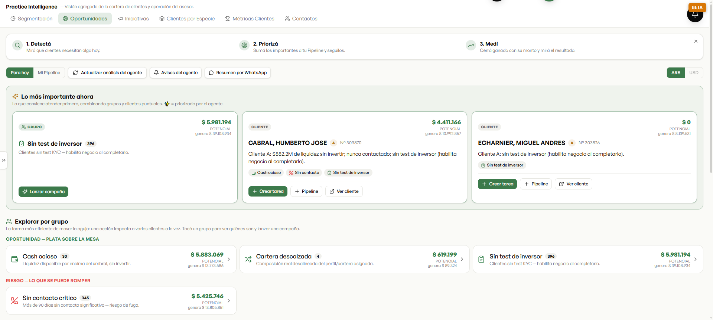
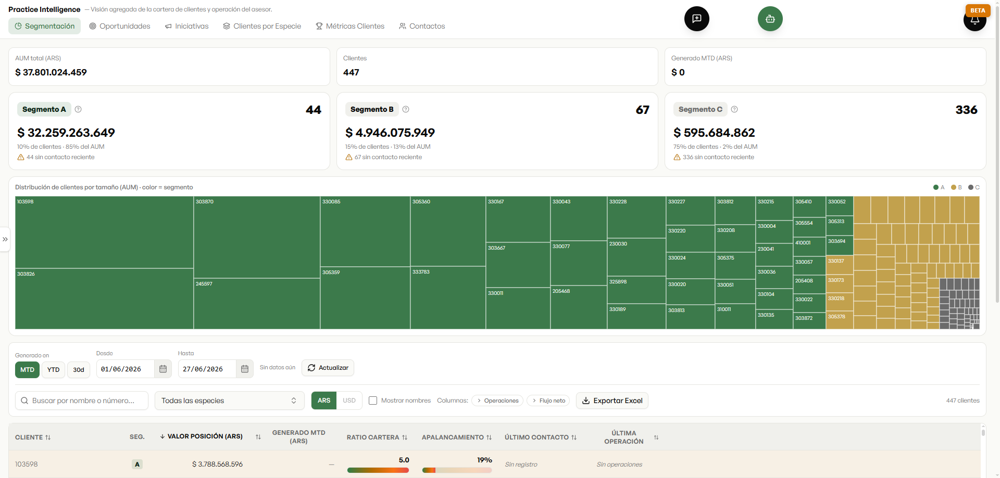
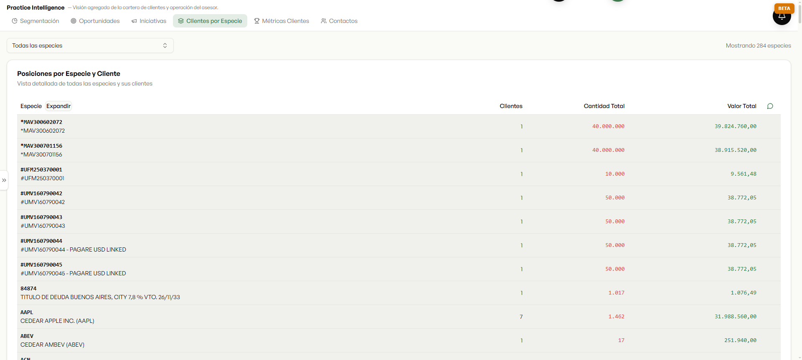
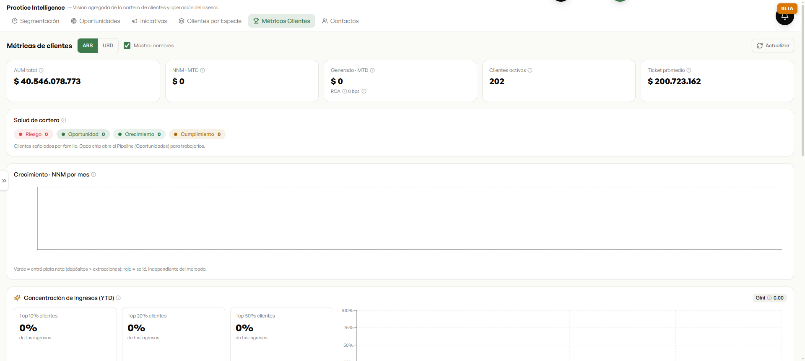

La inteligencia de negocio de la plataforma, con la lógica de un CRM profesional: detectar, priorizar y medir. Y todo, sin candados sobre tu negocio.

El sistema encuentra solo las oportunidades: clientes con saldo ocioso, carteras desalineadas, quién no fue contactado. Cada una con su potencial estimado y un botón para lanzar la campaña.

Después, los ordena por dónde está el mayor valor — el Pareto de la cartera: el 10% de los clientes concentra el 85% del patrimonio. El productor sabe a quién cuidar primero.

Y cuando hay algo para ofrecer, sabe al instante quiénes tienen tal especie — 284 especies, cada una con sus clientes. Una idea de mercado se vuelve, en segundos, una lista de a quién llamar.

Y se mide el resultado: AUM, ROA, dinero nuevo neto, ticket promedio y la concentración de ingresos. Para saber qué funcionó y repetirlo.
Es la información completa del negocio del productor y de la casa, no una versión recortada por un tercero. Más y mejores oportunidades, detectadas solas.